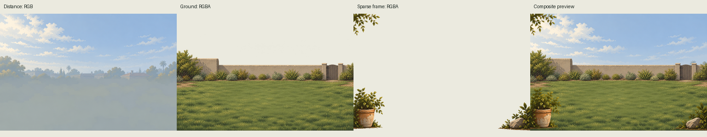
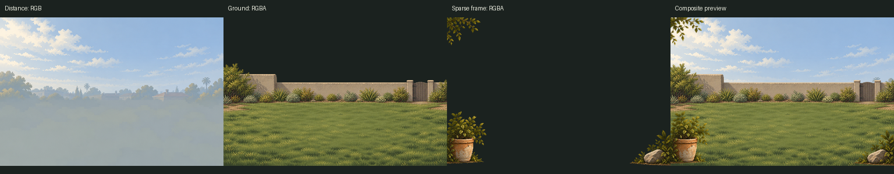
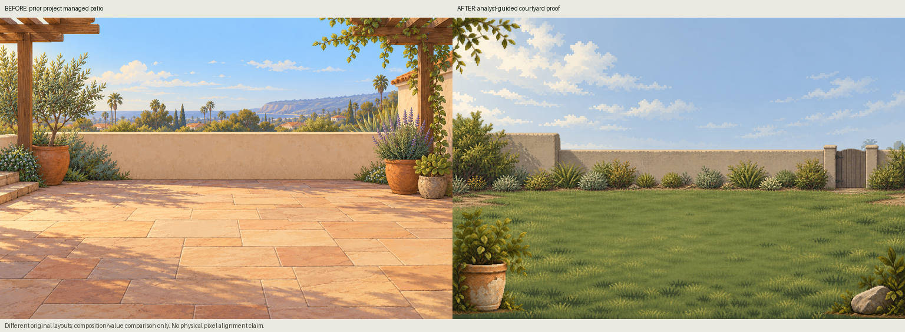
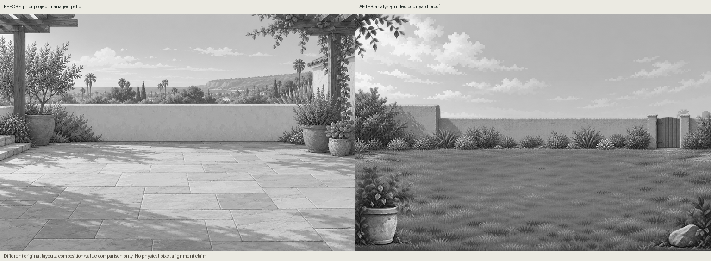
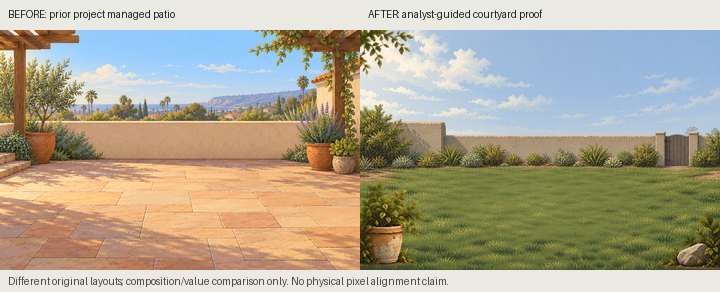
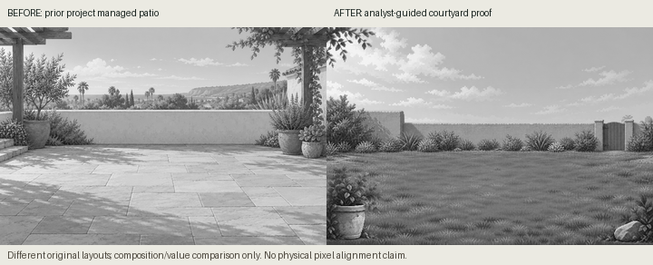

Analyst-reference-guided; no source image supplied. Three independently generated layers, provisional registration. Generated/reviewed; not staged, integrated or accepted.







Different layouts/materials; no physical pixel alignment claim. No fake bird canon or actual bird-contact test.
Manifest · Proxy metrics and caveats · Known defects